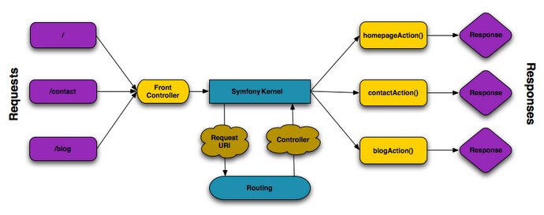
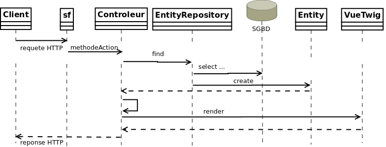

Présentation

Symfony est une solution créée par la société Sensiolabs qui en assure l’évolution, assitée par de nombreux contributeurs.
Symfony est un ensemble de Composants PHP, un framework pour les Applications Web, une Philosophie, et une Communauté — tous travaillant ensemble, en harmonie.
Qu'est-ce que Symfony ? par Sensiolabs - a french company
Cette introduction se base sur les ressources documentaires de Symfony (version 4), afin d’en faciliter le premier accès à des étudiants développeurs ayant eu un premier contact avec le développement web.
Pour réaliser les travaux pratiques, vous aurez besoin d’aller plus en profondeur sur la connaissance des composants. La documentation Symfony est accessible ici : https://symfony.com/doc/current/index.html
Modèle d’architecture applicative
Le modèle traditionnel d’architecture des applications web est de type 3 tiers (clients, serveur(s), SBBD(s))

Les applications symfony se situent sur le tiers du milieu "server et applications" (derrière un serveur HTTP).
En environnement de développement, les développeurs PHP disposent du PHP’s internal web server, un serveur http intégré au langage lui-même,
ce qui assure une certaine cohérence quant à la version de PHP utilisée pour les tests en phase de développement.
En environnement de production, l’application sera placée derrière un server Web de production, disposant d’une version de PHP conforme aux exigences du framework.
Les serveurs HTTP de production les plus courants sont Apache et Nginx.
Dans ce cas, reférez-vous aux consignes de configurations disponibles sur le site de symfony : web server configurations.
Prérequis
Pour le développeur
-
Avoir une première expérience en programmation orientée objet (POO)
-
Connaître les principes de fonctionnement d’une interaction HTTP (protocole sans état, transfert de valeurs typées) et les problématiques et solutions autour de la gestion du suivi de sessions HTTP
-
Maîtriser les concepts clés de l’interaction applicative avec un SGBD( R ) - (SQL)
-
Avoir des bases de HTML/CSS et JS.
Pour le système
Les prérequis système dépendent de la version de symfony que vous comptez utliser. On vérifiera en particulier :
-
La version minimale attendue de PHP (dépend de la version de Symfony) actuellement >= 7.1.3 )
$ php -v PHP 7.2.7
-
La présence de
composer(suive ce lienComposer) qui est un outil de gestion des dépendances pour des projets PHP.
$ composer -V Composer version 1.7.2 2018-08-16 16:57:12
Création d’une application symfony et vérification des pré-requis
Ce sont des opérations qui s’effectuent en ligne de commande.
Pour commencer, placez-vous dans un dossier racine, qui héberge(ra) vos différents projets web, puis, à partir de ce dossier, éxécuter la commande suivante :
composer create-project symfony/website-skeleton my-project
Explications :
composer (1)
create-project symfony/website-skeleton (2)
my-project (3)| 1 | appel de la commande composer ou composer.phar selon le cas |
| 2 | premier et deuxième arguments pour créer un projet selon un modèle |
| 3 | le troisième est le nom du projet, et donc du sous-dossier qui sera créé à partir de la racine courante (il est donc important de se placer dans un dossier de travail avant de lancer une telle commande) |
Démarrage du serveur et de l’application
Depuis la version 5.4 de PHP, un serveur web est intégré à l’API. Pour simplifier son usage, un composant symfony (un bundle) est disponible :
$ cd your-project $ composer require symfony/web-server-bundle --dev
Symfony fonctionne par composants, et il y en a un qui vérifie les prérequis, Symfony Requirements Checker tool
$ cd your-project/ $ composer require requirements-checker
$ cd your-project $ php bin/console server:run
| Par défaut, le serveur interne écoute sur le port 8000. S’il est déjà pris sur machine, vous pouvez en indiqué un autre, voir ici https://symfony.com/doc/current/setup/built_in_web_server.html |
Une fois ce composant installé, votre application pourra être sollicitée par la route http://localhost:8000/check.php, dont voici le résultat attendu :

Après avoir réglé la situation, pour des questions de sécurité, ne pas oublier de supprimer cette fonctionnalité :
cd your-project/ composer remove requirements-checker
| Vérifier les prerequis système est une des premières actions à réaliser lors de la phase de déploiement sur un serveur de production ! |
Sécurité
Symfony fournit un utilitaire appelé Security Checker qui vérifie si les dépendances de votre projet contiennent des failles de sécurité connues.
Une fois installé, cet utilitaire s’exécutera automatiquement chaque fois que vous installez ou mettez à jour une dépendance de l’application. Si une dépendance contient une vulnérabilité, en mode dev, un message clair vous sera présenté.
-
Appliquer le composant
security checkerà votre projet. La procédure est décrite ici : https://symfony.com/doc/current/setup.html
|
Le développeur travaille et teste en mode |
Résumé
À ce stade, vous avez, sur votre machine de dev, installé, configuré et testé un environnement de développement web avec Symfony. Vous avez installé Symfony en mode "boîte noire".
L’étape suivante vous amène progressivement à comprendre l’intérieur de cette boîte, à savoir comment l’utiliser !
Première page : notion de Vue/Contrôleur
Du point du développement logiciel d’une application web, "créer une page" c’est exposer une ressource web à un certain public. Pour cela, plusieurs activités sont concernées:
-
permettre à l’application web de répondre à une requête HTTP en définissant une route (portion terminale d’un chemin d’URL) pour la ressource en question
-
définir via quelle méthode d’accès HTTP cette ressource sera accessible (GET, POST, PUT, HEAD, …)
-
concevoir le contrôleur associé à la ressource : une méthode d’une classe
Controller -
définir la structure (type mime - representation) de la resource dynamique (par exemple via le contrôleur ou un template de vue twig)
Un requête HTTP de type GET correspond à une demande de resssource distante.
La ressource demandée peut correspondre à une donnée statique (un fichier placé sur le serveur) ou dynamique (construite pour l’occasion).
Nous nous plaçons dans le cas où l’application répondra par du contenu dynamique HTML.
| Une application web n’expose jamais directement ses templates de vue de ses ressources dynamiques (pas de lien direct vers un script de vue) |
Dans le cadre de symfony, un contôleur central (front controller) réceptionne les requêtes HTTP et les traduit en appel de méthodes d’instance d’une classe contrôleur (controller)

Comme le montre ce schéma, le développeur doit mettre à disposition du framework des méthodes dites d’actions.
Attention, le schéma ne montre que les méthodes (blogAction, contactAction et homepageAction),
mais ne donne pas le nom de la (ou des) classes où elles sont définies (source symfony.com).
|
La liaison méthode ←→ URL peut se réaliser soit par un fichier de configuration, soit via des annotations dans le code.
Nous choisirons cette dernière option, fort pratique. Avant de concevoir une telle classe, vous devrez ajouter des composants à votre
application. Le plus souple pour cela est de demander à composer de le faire pour vous :
$ cd your-project/ $ composer require annotations
Il serait également préférable d’installer des plugins à votre IDE : avec PhpStorm,
aller File→Settings puis chercher plugin symfony et les installer.
Voici un exemple de classe contrôleur, extrait de la documentation : Symfony - page_creation.html
<?php
// src/Controller/LuckyController.php (1)
namespace App\Controller; (2)
use Symfony\Component\HttpFoundation\Response; (2)
use Symfony\Component\Routing\Annotation\Route;
class LuckyController (3)
{
/** (4)
* @Route("/lucky/number") (5)
*/
public function number() (6)
{
$number = mt_rand(0, 100);
return new Response( (7)
'<html><body>Lucky number: '.$number.'</body></html>'
);
}
} (8)| 1 | un comment à destination du lecteur, afin d’identifier le chemin de sauvegarde |
| 2 | les librairies dont dépend le code ci-dessous (Classe et annotation) |
| 3 | une classe normale PHP Objet |
| 4 | Attention : démarre avec 2 étoiles (ref. à PHPDOC) |
| 5 | définition de la logique d’appel (extrait terminal URL de l’application) |
| 6 | une méthode public; Elle sera automatiquement appelée via le front controller. |
| 7 | retourne un instance de Response (avec du contenu HTML) |
| 8 | le marqueur de fin de traitement PHP (?>) est volontairement absent afin de conserver le sens librairie d’une classe Controller. |
Voici un extrait des spécifications de la fonction http://php.net/manual/fr/function.mt-rand.php
int mt_rand ( int $min , int $max )
Valeurs de retour
Un entier aléatoire compris entre min (ou 0) et max inclusif, ou FALSE si le paramètre max est inférieur à min.http://localhost:8000/lucky/number
Rendu par une logique de vue (archtecture MVC)
Concevoir la logique de présentation (HTML and Co) dans un contrôleur n’est pas une bonne pratique.
Fort heureusement Symfony vient avec Twig : un langage de vue puissant et plaisant à utiliser.
Twig est proposé en tant que composant, qu’il faut installer :
$ cd your-project/ $ composer require twig
Il faut ensuite s’assurer LuckyController hérite de la classe de base des contrôleurs AbstractController:
// src/Controller/LuckyController.php
// ...
+ use Symfony\Bundle\FrameworkBundle\Controller\AbstractController; (1)
- class LuckyController
+ class LuckyController extends AbstractController (2)
{
// ...
}| 1 | déclaration de la dépendance (un import) |
| 2 | la classe LuckyController hérite de AbstractController |
Et faire en sorte que la méthode contrôleur délègue la vue à une page twig :
// src/Controller/LuckyController.php
// ...
class LuckyController extends AbstractController
{
/**
* @Route("/lucky/number")
*/
public function numberAction()
{
$number = mt_rand(0, 100);
return $this->render('lucky/number.html.twig', array( (1)
'number' => $number,
));
}
}| 1 | appel à la méthode héritée (render) en lui passant le nom d’une vue, suivi d’un tableau associatif, appelé aussi dictionnaire, composé de couples (nom_variable⇒valeur). Dans notre cas, le tableau n’a qu’un seul élément ('number'⇒ $number), qui sera passé à la vue. La vue aura accès à ces valeurs directement par le nom des clés définis dans ce dictionnaire. |
Les fichiers de vue seront cherchés par symfony, par défaut, dans le dossier templates à partir de la racine du projet (ce dossier est automatiquement crée lors de l’installation de twig).
Template de base de l’application
C’est un fichier qui détermnine la structure HTML/CSS générale de votre application. La plupart du temps un tel template se base sur un modèle proposé par des frameworks CSS (bootstrap, semantic-ui, …). Il est parfois acheté auprès de sociétés spécialisées.
Exemple de template simple, from scratch, créé par le composant twig lors de son intégration dans ce projet (symfony >= 4)
<!DOCTYPE html>
<html>
<head>
<meta charset="UTF-8">
<title>{% block title %}Welcome!{% endblock %}</title>
{% block stylesheets %}{% endblock %}
</head>
<body>
{% block body %}{% endblock %} (1)
{% block javascripts %}{% endblock %}
</body>
</html>| 1 | Définition d’un block nommé body (ne pas confondre avec <body>).
Les vues héritant pouvent alors redéfinir ces blocks. |
Ce template de base définit 4 blocks : title, stylesheets, body et javascripts.
Pour répondre au besoin de notre méthode numberAction de LuckyController, nous
devons créer une nouvelle vue dans le dossier templates/lucky, nommée number.html.twig (lucky est un dossier qu’il faut créer) :
{# templates/lucky/number.html.twig #} (1)
{% extends 'base.html.twig' %} (2)
{% block title %}Devine{% endblock %} (3)
{% block body %} (4)
<h1>Your lucky number is {{ number }}</h1>
{% endblock %}| 1 | un commentaire twig qui vous informe, vous lecteur, de la localisation de ce fichier |
| 2 | cette vue hérite d’un template qui définit les blocs title et body |
| 3 | redéfinition du bloc title |
| 4 | redéfinition du bloc body |
Vous trouverez la syntaxe twig ici : https://twig.symfony.com/
En résumé
Nous avons vu les principes d’interaction d’une application web :
-
Les requêtes HTTP entrantes sont routées par symfony sur des classes contrôleurs : Comprendre : une requête client déclenche un appel de méthode d’un objet Controller. C’est à ce niveau que des décisions algorithmiques métier sont exécutées.
-
La représentation de la réponse est déléguée à une logique de vue (twig)
Gestion des données d’entrée
Conformément à l’architecture applicative, c’est une méthode dite contrôleur qui prend en charge l’exploitation des données transmises par le client (celui qui est à l’origine de la requête HTTP)
| Teminologie : les méthodes associées à des Routes dans une classe Controller sont appelées méthodes d’action. Par extension, on nomme parfois de telles méthodes des contrôleurs. |
Auto-injection de l’objet Request
Pour accéder aux données transmises avec la requête HTTP, le contrôleur passera par un objet de type Request (de HttpFoundation).
C’est par l’intermédiaire de cet objet, que nous pourrons accéder aux données de la session utilisateur.
Utilisation d’un objet de la classe Symfony\Component\HttpFoundation\Request.
use Symfony\Component\HttpFoundation\Request; (1)
[...]
public function index(Request $request) (2)
{
// exploiter $request
}
[...]| 1 | un composant du micro-framework |
| 2 | en déclarant un paramètre de type Request, on demande à symfony de nous auto-injecter un argument de ce type, parfaitement bien initialisé. |
| Attention, ne pas faire usage de variables super-globales comme GET[], SESSION[], … |
Données implicites
Ce sont les données transmises par le client, et le serveur,
dans la partie entête HTTP. Ces données sont accessibles via l’objet Request
qui dispose de méthodes bient pratiques pour interroger ces données.
-
getLanguages() Returns the list of accepted languages ordered by descending quality.
-
getCharsets() Returns the list of accepted charsets ordered by descending quality.
-
bool isXmlHttpRequest() Returns true if the request is a XMLHttpRequest.
-
…
voir API Request
Données explicites
ce sont celles en provenance soit d’un formulaire (HTML) soit comme composantes QueryString de l'URL.
via un formulaire
// obtenir une valeur transmises par POST d'après sa clé
$request->request->get('idproduit'); (1)
// obtenir une instance de UploadedFile identifiée par foo
$request->files->get('foo');| 1 | C’est via l’attribut request, de l’objet référencé par $request (à ne pas confondre) que le contrôleur aura accès aux données passées par POST. |
Cas des arguments passés dans l’url
// retrieves GET variables respectively
$request->query->get('x', 66); (1) (2)| 1 | C’est via l’attribut query, de l’objet référencé par $request, que le contrôleur aura accès aux données passées par GET.
Par exemple, les données transmises en arguments de l’url (?a=b&x=42). |
| 2 | La méthode get prend en premier argument la clé (ici a ou x), le deuxième étant une valeur par défaut. |
Cas de valeurs incluses dans l’url même
/**
* Matches /blog/*
*
* @Route("/blog/{slug}", name="blog_show") (1)
*/
public function show($slug) { ... } (2)| 1 | La route contient une partie variable, représentée par un paramètre placé en { } (ici slug). Exemples d’arguments : /blog/usecase1 ou /blog/usecase2. |
| 2 | Reprise de la partie variable de l’url comme paramètre de la méthode (attention, même nom que le paramètre de route) |
Il est dans ce cas très facile de récupérer la valeur en question, car elle est passée automatiquement à la méthode !
Plus d’infos sur l’exploitation des valeurs d’entrée :
avec des exemples de redirection :
TP - Le contrôleur et la vue (initiation)
| Attention à bien respecter les conventions de nommage : http://symfony.com/doc/current/contributing/code/standards.html |
|
Pour ce TP, vous pouvez choisir d’utiliser le serveur HTTP intégré à PHP en le lançant en ligne de commande.
Dans ce cas, il vous faudra tester vos routes ainsi : |
-
Ajouter un nouveau controller nommé IndexController disposant d’une méthode nommée indexAction. Faire en sorte que l’index présente le message « Hello world ! » à l’utilisateur (travail sur vue twig associée)
-
Ajouter la méthode d’action helloAction ci-dessous, qui reçoit en paramètre un nom, et retourne, via une vue twig, le message « Hello <nom> !» (où <nom> est l’argument reçu)
/**
* @Route("/hello/{nom}", name="app_hello")
*/
public function helloAction($nom) {
return $this>render('index/hello.html.twig', array('nom' => $nom));
}Faire en sorte que le nom soit présenté à l’utilisateur en majuscule (voir : https://twig.symfony.com/doc/2.x/templates.html)
-
Modifier la méthode d’action helloAction afin que, si le nom transmis est de la forme prenom*nom (prénom[étoile]nom), le message soit présenté selon l’exemple ci-dessous : http://localhost:8000/hello/django*reinhardt
⇒ à vous de déterminer le travail qui devra être réalisé côté contrôleur et côté logique de présentaiton (twig)

si aucune étoile n’est présente dans la dernière partie de l’url,
le fonctionnement de helloAction devra rester conforme à l’attendu de la question précédente.
|
-
Modifier le controleur de sorte que si aucun nom n’est passé à hello, le message 'Hello Inconnu !' est présenté. (voir le concept de valeur par défaut pour le paramètre)
-
Ajouter une nouvelle méthode d’action liée à la route /hello/prenom/nom
Attention contrainte ! : cette méthode devra réutiliser la vue de la méthode
d’action de la route /hello (conforme modifiée en question 3 de ce TP)
… et montrera donc le prénom et nom comme précédemment (Ref. à django Reinhardt) car c’est
la même vue.
-
Ajouter un message flash (concept à étudier !), qui affiche un message de bienvenue à l’utilisateur lors de sa première sollicitation de l’action hello (pour une même instance de son navigateur). Conseil : Afficher dans un premier temps le message, puis mettre sous condition la création du message en gérant une donnée de session utilisateur.
| l’objet Session peut être retrouvé via un objet Request que l’on déclare en paramètre d’une méthode d’action et qui sera automatiquement « injecté » (passé) par le contrôleur principal de symfony. |
Travaux Dirigés Avancés
Prerequis
Avoir installé et configuré votre IDE et atteint la dernière étape de ce premier tutoriel (avec twig) à savoir luckynumber et hello:

Création d’une application PHP - sans état supporté côté serveur -
-
Traduction d’un code PHP mélangant logique de traitement et logique de vue en une structure séparant Vues (Twig) et Contrôleurs (méthodes)
-
Poursuite du développement de la solution en mode interatif et incrémental avec Symfony, à savoir une application web répondant aux spécifications suivantes
| SPECIFICATIONS |
-
L’utilisateur cherche à trouver un nombre retenu par l’application de façon « aléatoire », sur une plage d’amplitude donnée, disons [0..30], qui correspond à la taille d’une chaine de caractères en fait. La valeur d’un caractère à l’indice i de cette chaine permettra de connaître si i est le nombre à trouver ou s’il y a été soumis précédemment comme solution possible par l’utilisateur.
-
Chaque nombre sera représenté par une cellule
tdd’un tableauhtml(comme dans le code fourni en annexe). -
A chaque tentative de réponse, le système présente son analyse (nombre proposé trop petit, trop grand, exact)
-
Durant les tentatives, l’application montre les cellules déjà sélectionnées par l’utilisateur (prévoir une classe CSS dédiée).
-
La partie s’arrête lorsque l’utilisateur a trouvé le bon nombre.
| L’application ne sauvegardera aucune donnée sur le serveur du jeu (historique utilisateur) (les « données de sessions » seront transmises au client – et donc portées par celui-ci – un exemple de code est donné en annexe). |
Veuillez respecter les étapes suivantes
-
Tester, dans un dossier à part, le code PHP de l’annexe
-
Traduire le code PHP de l’annexe en un projet symfony (avec contrôleur index et vue twig)
-
Faire évoluer l’application afin qu’elle réponde aux attentes (exprimées ci-dessus).
-
Présentation des nombres dans une matrice 10 x 10
-
L’utilisateur pourra relancer autant de parties qu’il le souhaite. Comme il se doit, l’application sera capable de gérer plusieurs utilisateurs en même temps.
-
Lorsque que le nombre est trouvé, l’application affiche un des messages suivants :
-
« Vous avez de la chance !» si le nombre d’essai du joueur est inférieur au nombre optimal (à déterminer après avoir étudié le principe de la recherche dichotomique - lien wikipédia ci-dessous).
-
« Votre stratégie a été la bonne » si le nombre d’essai du joueur est égale au nombre optimal.
-
« Vous avez débordé de n tentatives » où n est le nombre de tentatives au-delà du nombre optimal.
-
Pour déterminer le message à présenter, référez-vous aux caractéristiques d’efficacité de la recherche dichotomique : https://fr.wikipedia.org/wiki/Dichotomie
-
Optionnel, pour les plus avancés :
-
L’utilisateur peut étendre l’amplitude de la matrice.
-
Proposer une version qui n’expose pas la valeur à trouver au client (prévoir un cryptage symétrique du nombre – l’expéditeur est le destinataire).
-
Ressources à prendre en compte
-
Génération pseudo-aléatoire d’un nombre : http://php.net/manual/fr/function.mt-rand.php
-
Legacy d’une ébauche de code en annexe pour commencer.
-
Les principe de la recherche dichotomique : https://fr.wikipedia.org/wiki/Dichotomie
Annexe TP-1 - code legacy (prototype)
<?php
// exploitation des données reçues (ou attendues) – on attend un couple i=n
if (isset($_GET['i'])) :
$iChoixJoueur = (int) $_GET['i'];
// force l'interprétation de la valeur en un entier
else :
$iChoixJoueur = -1;
endif;
// ou (même traitement que ci-dessus)
// $iChoixJoueur = isset($_GET['i']) ? (int) $_GET['i'] : -1; //opérateur ternaire
// on récupère l'historique des tentatives (une chaîne de caractères en fait)
if (empty($_GET['histo'])) :
$histo = '----------w--------------';
// TODO : placer le numéro gagnant (w)iner de façon aléatoire
else:
$histo = $_GET['histo'];
endif;
// mise à jour de l'historique : prise en compte du choix utilisateur
if ($iChoixJoueur >= 0 && $iChoixJoueur < strlen($histo)) :
$histo[$iChoixJoueur] = 'j';
endif;
?>
<!DOCTYPE html>
<html lang="fr">
<head>
<meta charset='utf-8' />
<title>À la recherche du nombre</title>
<style type="text/css">
.normal {
border: 1px solid black;
}
.dejajoue {
border: 1px solid black;
background-color: lightgreen;
}
</style>
</head>
<body>
<h2>à la recherche du nombre</h2>
<table>
<tbody>
<tr>
<?php
// mode debug : var_dump($histo);
// TODO : il faudrait mieux appliquer la classe "dejajoue"
// a toutes les cellules deja jouees
for ($i=0; $i < strlen($histo); $i++) :
if ($i == $iChoixJoueur) : ?>
<td class = "dejajoue">
<?php else : ?>
<td class = "normal">
<?php endif; ?>
<a href="?i=<?php echo $i ?>&histo=<?php echo $histo ?>">
<?php echo $i; ?>
</a>
</td>
<?php endfor; ?>
</tr>
</tbody>
</table>
</body>
</html>Introduction au Model
Éléments d’architecture
Nous avons vu comment associer des routes à des contrôleurs (méthodes d’action d’une classe Controller).
Nous allons voir comment le contrôleur peut s’appuyer sur des objets métier pour implémenter une logique de cas d’utilisation.
| Il est courant de faire porter la responsabilité d’un cas d’utilisation à une classe contrôleur. |
Il existe 2 sortes d’objets métier : Entity et EntityRepository.
-
Entity: Représente une classe métier pour le domaine étudié (Client,Contrat, …). -
EntityRepository: Est responsable de la communication avec le système de persistance, notamment en lien avec l'ORM.
Le contrôleur dépend de Entity et EntityRepository, Entity ne dépend pas d’un ORM, EntityRepository si.

Premiers pas avec le model
Guide
Faire le lien entre un objet (instance d’une classe Entity) et une ligne d’une table d’une base de données est une opération complexe (synchronisation, mise en cache, cohérence de type, …).
Les ORMs (object-relational mapping) sont des logiciels qui effectuent le lien entre objet métier et ligne de table d’une base de données. Par défaut, symfony utilise la solution doctrine.
Tutoriel doctrine de symfony
Doctrine peut être mise en oeuvre sans Symfony, mais nous vous invitons néanmoins à
étudier le tutoriel Doctrine avec Symfony, car ce dernier en simplifie l’accès.
Ce tutoriel vous montre comment lier une classe métier à une table d’une base de données, et donc une instance (un objet) à une ligne (occurrence d’une table), et les opérations CRUD associées.
Tutoriel à suivre : Introduction à Doctrine avec Symfony - Durée estimée : 2H (étude, configuration, codage des exemples et tests)
Au menu :
-
Entity et Table liée
-
Liaison Attribut - Colonne (field - column)
-
Migration modèle objet ←→ schéma de la base de données
-
Opérations CRUD
À l'issue de ce tutoriel (~2H), vous réaliserez les travaux suivants :
Travaux pratiques
Durée moyenne : 8H
-
Tester vos connaissances sur http://quizbe.org/ (créer un compte et lier-le à votre classe SIO22-LDV-2018-19)
-
Ajouter, sur la plateforme quizbe, une nouvelle question QCM sur le thème du Model avec Symfony
| Bonus de 1 point (sur un des contrôles) si proposition originale, juste et pertinente. |
-
À partir de l’exemple étudié dans le tutoriel de Symfony sur la notion de
Model(classeProduct), réalisez les opérations permettant à un utilisateur lambda de :-
Lister les produits
-
Création d’un produit
-
Modifier un produit
-
Supprimer un produit
-
Dans les vues twig, vos liens seront basés sur le nom des routes et non sur les routes elles-mêmes.
Ces noms sont consultatbles en ligne de commande : php bin/console debug:router. Voir aussi https://symfony.com/doc/current/templating.html#linking-to-pages
|